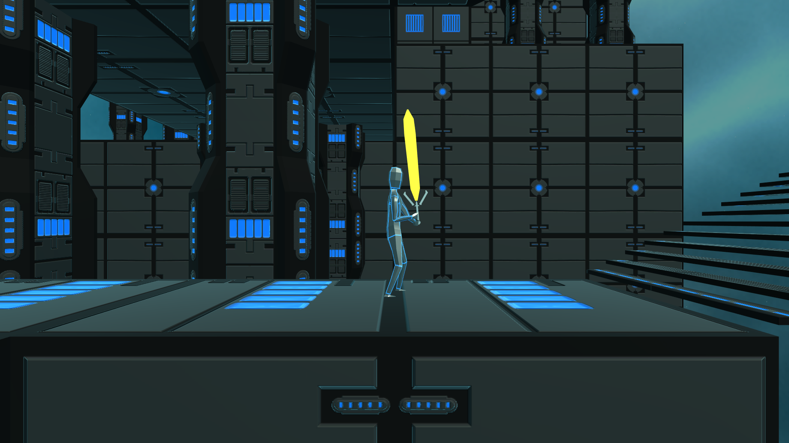

Gravity Controller - A novel interface for controlling gravity in a game
Engine: Unity
Other Tools: Arduino, accelerometer, analog joystick
Assets from .WAV
This project was a tech demo I built as my final project in a class about novel interfaces. It is a 2D platformer/action game where the player controls gravity by rotating an accelerometer. Other actions (movement and attacking) are done through a joystick and buttons attached to the Arduino. Measurements from the accelerometer and other inputs are collected by the Arduino, which is connected to the computer via USB. In the game, a serial connection is opened, through which the accelerometer values are read.
In the game, the simple enemies have shields that make direct attack impossible. By manipulating gravity (through rotating the controller), the player can get behind these enemies to destroy them. Manipulating gravity is also necessary to move through the level.
This was a solo project, so all of the code and the physical controller were built by me.